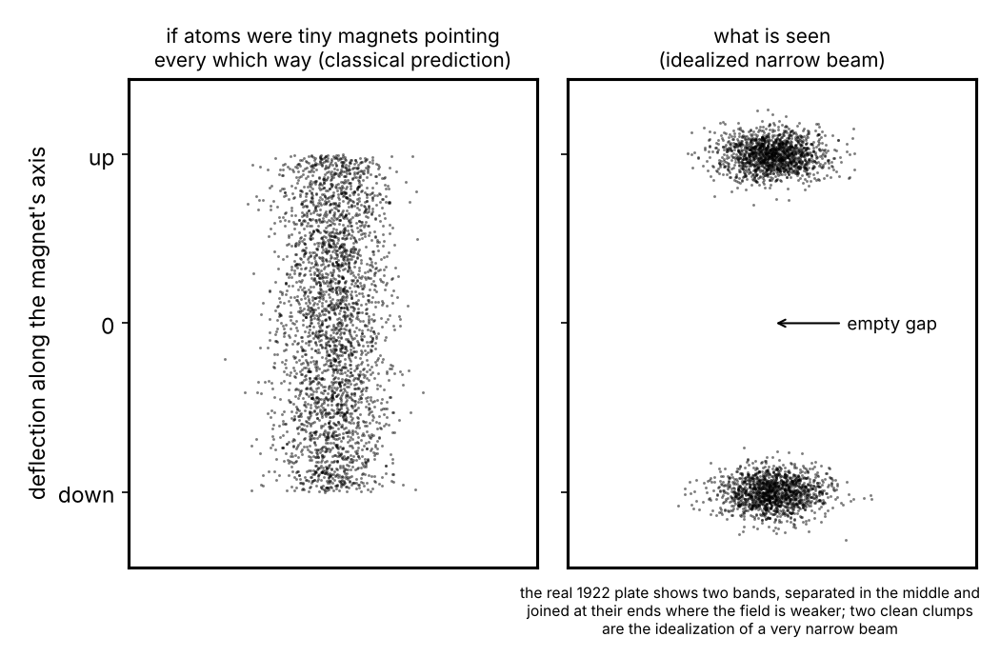
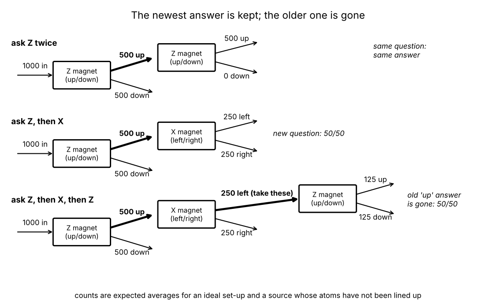

Quantum mechanics is our basic theory of matter and light, and the theory underneath chemistry, materials, lasers and transistors. One of its most basic lessons can be seen with a beam of silver atoms, a magnet and a glass plate: nature answers some questions with only a few possible answers, by chance, and asking one question can erase the answer to another.
One magnet (Stern and Gerlach, 1922). Silver atoms from an oven form a narrow beam that flies through a vacuum, between the poles of a magnet, onto a glass plate. Seen: two separate bands, one shifted towards each pole (call these up and down), with nothing in between at the centre of the pattern. Idealization: for a very narrow beam, two clean spots with an empty gap; on the real plate the two bands join at their ends, where the field, and its unevenness, are weaker.
Why the magnet deflects them at all: each silver atom is itself a tiny magnet, because of one of its electrons (an electron's magnetism is built in; physicists call the property behind it "spin", though nothing is rotating), and the poles are shaped to make the field much stronger near one of them, because an uneven field pushes a tiny magnet along the pole-to-pole line, by an amount and in a direction that depend on how it is oriented.

Magnets in sequence. Sequences like the following have been realized in several forms with atoms and with neutrons; the clean three-magnet version is the textbook idealization: counts are averages over many atoms, and 100%, 50% and 0% are for an ideal set-up. Block the "down" band and send the "up" atoms through a second, identical magnet. Seen: all come out "up". Instead send "up" atoms through a magnet turned by 90°, so that it sorts left from right (call the up/down magnet Z and this one X). Seen: half left, half right, and nobody can predict which way a given atom will go. Send the "left" atoms through a third magnet set along Z again. Seen: half up, half down; the earlier "up" answer is gone.

Classical pictures, and what kills each. Tiny bar magnets pointing every which way: the push would take every value between the two extremes, giving one continuous band; killed by the two separate bands. A subtler picture: each atom carries fixed labels, up/down and left/right, and each magnet is a sieve that reads one off without changing anything. This fits the first three experiments; the third magnet kills it, because every atom reaching it was labelled "up", so a sieve would have returned all of them "up", not half "down". What survives is any picture in which a magnet changes the atom as it sorts it. All the quantum models are of that kind; what they add is a precise account of the change.
Model 1: states as directions, magnets as questions. Intuition. Picture the atom's magnetic state as a point on a globe. A magnet set along some axis asks one question, "towards this axis's north pole or its south pole?", and for a silver atom in a strong magnet like Stern and Gerlach's, that question has two possible answers: two spots, no third (in very weak fields the nucleus's own faint magnetism can split things further, adding a third beam near the centre; other kinds of atom give other numbers of spots, but always a definite number). The chance of each answer depends only on the angle between the atom's point and the magnet's axis: certain at the pole, 50/50 at 90° from it, zero at the opposite pole, and in between, the nearer a pole, the likelier. After the answer, the point sits at the pole of the answer given (for an ideal magnet). That is the whole model. The oven lines nothing up, so, as far as any experiment can tell, the points arrive scattered evenly over the globe, and "left" is 90° from both up and down; with that, every count in the figure follows. Nothing was hidden and scrambled: the state simply no longer carries the old answer, because no point on the globe is at a Z pole and an X pole at once.
Why this model. It is the simplest known structure that gives all four observations plus the chance at every angle in between, a rule checked at many angles with neutrons. The same globe describes any system whose questions all have two possible answers, and with directions in bigger abstract spaces, which have no globe to picture, the same idea describes every quantum system. Pros: compact, exact, general; the language of quantum computing, where a qubit is exactly one of these globes. Cons: it treats "asking" as a primitive and says nothing about what the magnet and plate physically do; the globe is exact only for two-answer questions; the atom's position is left out.
Model 2: the same magnet as a splitting wave. Intuition. The atom also has a wave, its wave function, spread over the places it might be; where the wave is bigger, the atom is likelier to be found. In this model, an atom whose point lies between the Z poles has a wave made of a "north" piece and a "south" piece, in proportions set by the angle (the nearer the point to north, the bigger the north piece); the point and the two pieces are one state described two ways. The magnet pushes the north piece up and the south piece down, so the wave splits into two packets that fly apart, one per answer, and the plate finds the whole atom in one of them, with chances given by the squared sizes of the two pieces. The magnet is not a black box: it ties the atom's magnetism to a position the plate can see.
Why this model. It shows the question being asked as ordinary motion, right up to the dot, and it predicts something no label-scrambling sieve could: send Z-up atoms into the X magnet, steer its two packets back together before anything records which is which, and the original state returns, so a later Z magnet gives "up" every time (in an ideal set-up; in the real experiments, nearly). This has been done with atoms in recent years. Pros: the same wave function describes atoms, molecules and solids, so most of a measurement becomes ordinary physics. Cons: more to hold in mind; and in the standard formulation the last step, "one whole atom, in one packet, with these chances", is an added rule, here as in Model 1; whether it must be is one of the open questions below.
What happens at the dot? Here physicists divide. The first three views are interpretations: identical counts for everything above, different claims about what is real. The fourth changes the theory slightly.
Copenhagen-style: the point and the packets are tools for predicting what the plate will show; the dot is the result, and before it "up or down?" has no value the theory assigns. Pro: minimal; it matches how physicists use the theory day to day. Con: critics object that it never says what makes the plate a recorder and the magnet not.
Many-worlds: both packets persist, the plate's atoms join each, and from then on there are two branches, upper dot and lower dot, with a version of you in each. Pro: no added rule. Con: critics object that if both outcomes happen it is unclear what "a 50% chance" means; supporters reply that the squared sizes are what a branch's inhabitant should expect.
Pilot-wave: the atom always has an exact position and rides inside one packet; which one is fixed by exactly where in the beam it started and how the magnet is set: determined, yet unpredictable even in principle, because no measurement can learn that starting point more finely than the wave allows. No up/down label is involved. Pro: a clear picture with nothing vague at the dot. Con: for several atoms whose waves have become linked (entangled), the guidance acts instantly across any distance, though it cannot be used to send signals; and its extension to light and high-energy physics is less settled.
Objective collapse: the packets are real and persist until the atom's arrival is amplified into a large record (a visible deposit, a detector's current); there the vast number of particles moved triggers a genuine, random localization within a tiny fraction of a second. For a lone atom the proposed effect is far too weak to show up in any count above. Pro: a mechanism, and a testable one. Con: new constants of nature, and experiments with large molecules and tiny vibrating devices have so far found no sign of collapse, only limits on how strong it could be.
How they relate. Models 1 and 2 are one theory at two levels of detail: the first leaves the atom's position out and treats the magnet as a question, the second puts the position in and shows the question being asked; they never disagree. Between the three interpretations, what decides today is taste and conceptual economy; for objective collapse, experiment with ever larger objects. Zoomed out, quantum mechanics is about states that are directions rather than lists of fixed facts; questions that sometimes, as here, have only a few possible answers where classical physics expected a continuous range; chances set by angles; and answers that update the state and erase the answers to incompatible questions. The same kind of two-answer magnetism, in the hydrogen nuclei of your body, is what an MRI scanner works with.
Check yourself: Atoms come out of the X magnet's "left" exit and go into a third magnet that is also set along X. What fraction come out "left"?